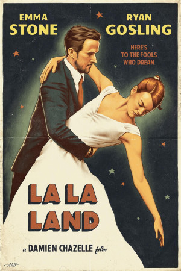
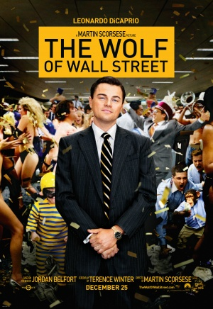
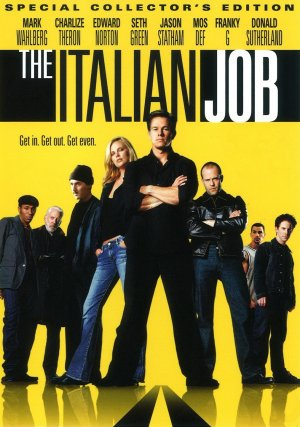

<h1>Movie Rankings</h1>
<h2>Three movies and their ratings</h2>
<hr/>
<h3>La La Land.</h3>

<ul>
    <li>Rating: 8.0 - <a href="https://www.imdb.com/title/tt3783958/">IMDB</a></li>
    <li><a href="https://www.rottentomatoes.com/m/la_la_land">Tomatometer</a></li>
</ul>
<h3>The Wolf of Wall Street.</h3>

<ul>
    <li>Rating: 8.2 - <a href="https://www.imdb.com/title/tt0993846/">IMDB</a></li>
    <li><a href="https://www.rottentomatoes.com/m/the_wolf_of_wall_street_2013">Tomatometer</a></li>
</ul>

<h3>The Italian Job.</h3>

<ul>
    <li>Rating: 7.0 - <a href="https://www.imdb.com/title/tt0317740/">IMDB</a></li>
    <li><a href="https://www.rottentomatoes.com/m/italian_job">Tomatometer</a></li>
</ul>
